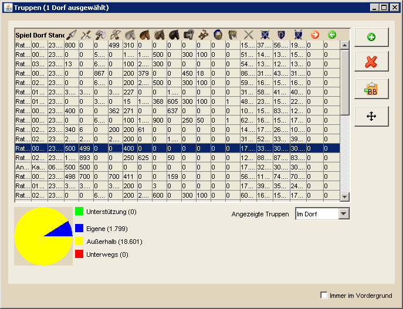
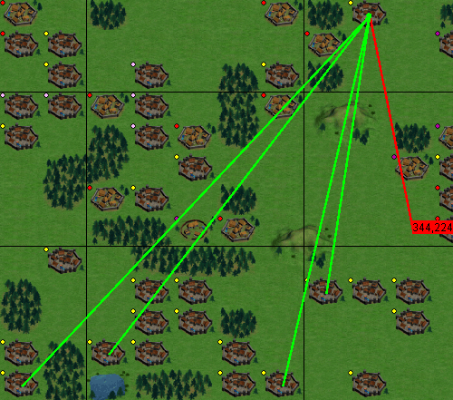

| |
Truppenübersicht |
| |
|  |
| |
Die Truppenübersicht zeigt die Anzahl der Truppen pro Dorf, nachdem diese Information aus dem Spiel nach DS Workbench importiert wurden. Die Spieler Spalte dient dabei dem Fall, dass man von mehreren Spielern die Truppeninformationen erhalten hat, z.B. freiwillig von Mitgliedern des eigenen Stammes oder durch den Import von Spähberichten. Die Stand Spalte gibt das Datum an, wann die gezeigten Informationen von DS Workbench gelesen wurden.
Die folgenden Spalten enthalten die Anzahl des jeweiligen Truppentyps, die sich anschließenden vier Spalten zeigen die Kampfkraft der Truppen eines Dorfes sowohl in der Offensive, als auch in der Defensive gegen Kavallerie und Bogenschützen.
Die letzten beiden Spalten zeigen an, wieviele Dörfer von dem jeweiligen Dorf unterstützt werden (rotes Symbol) bzw. aus wievielen Dörfern Unterstützung in diesem Dorf steht (grünes Symbol). Werte für diese Spalten sind nur eingetragen, wenn man neben den Truppeninformationen noch die Übersicht über die Unterstützungen importiert hat.
Wählt man eins oder mehrere Dörfer aus die unterstützt werden oder unterstützen, so wird auf der Hauptkarte einzeichnet, woher bzw. wohin die Unterstützung kommt/geschickt wurde, was wie folgt aussieht:
|
| |
|  |
| |
Hierbei gelten die folgenden Zeichenregeln:
- Eingehende Unterstützungen werden als grüne Linie gezeichnet
- Ausgehende Unterstützungen werden als rote Linie gezeichnet
- Das Zieldorf der Unterstützung wird durch einen grünen bzw. roten Kreis gekennzeichnet
- Für die Sichtbarkeit der Linien gilt:
- Sind Herkunft und Ziel sichtbar, wird eine durchgezogene Linie gezeichnet
- Ist nur Herkunft oder Ziel sichtbar wird eine verkürzte Linie gezeichnet, die am Ende die Entfernung in Feldern zeigt, die das Herkufts- oder Zieldorf der Unterstützung entfernt liegt, wie in der Grafik oben zu sehen.
|
Weiterhin ist es möglich, die Truppenzahlen für einzelne Dörfer manuell zu verändern. Diese Änderungen werden jedoch beim nächsten Import mit den aktuellen Daten überschieben! Da sich einige Werte durch Berechnung anderer Werte ergeben, kann man nur bestimmte Felder der Truppenübersicht ändern. Hierzu zählen:
- Eigene
- Außerhalb
- Unterwegs
Mit dem Feld Angezeigte Truppen kann man wählen, welche Truppen in der Tabelle angezeigt werden. Hier kann man zwischen "Im Dorf", "Eigene", "Außerhalb", "Unterwegs" und "Unterstützung" wählen. Zusätzlich zeigt ein Kuchendiagramm an, welche Anzahl von Truppen (Einheit = Bauernhofplätze) sich an den jeweiligen Orten befindet bzw. in welcher Menge Unterstützung vorhanden ist.
Möchte man Truppeninformationen für eigene Dörfer manuell hinzufügen, so besteht diese Möglichkeit über den grünen Button auf der rechten Seite. Zudem ist es möglich, Truppeninformationen über den dritten Button auf der rechten Seite als BB-Codes zu exportieren. Damit könnt ihr beispielsweise Informationen darüber, wieviel Unterstützung in euren Dörfern vorhanden ist, im Stammesforum oder einzelnen Membern mitteilen.
|
|
|